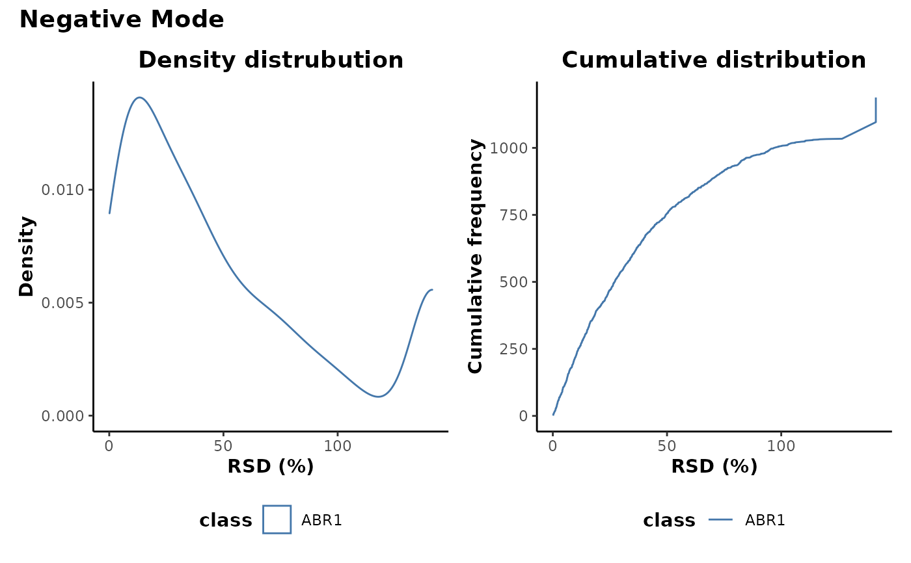
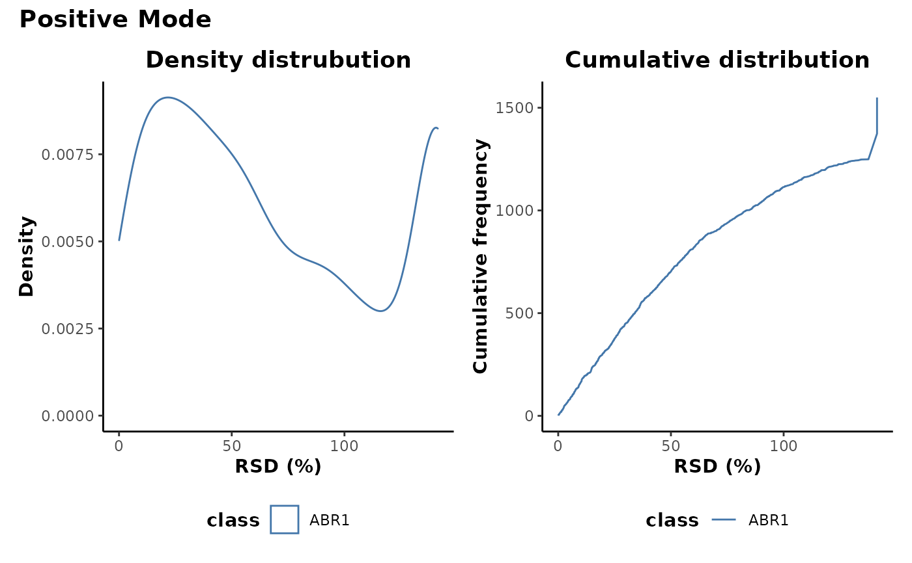

Plot RSD distributions of processed data.
# S4 method for Binalysis plotRSD(analysis, cls = "class") # S4 method for MetaboProfile plotRSD(analysis, cls = "class")
| analysis | S4 object of class |
|---|---|
| cls | info column to use for class labels. |
A list of plots of RSD distributions
## Retrieve file paths and sample information for example data files <- metaboData::filePaths('FIE-HRMS','BdistachyonEcotypes')[1:2] info <- metaboData::runinfo('FIE-HRMS','BdistachyonEcotypes')[1:2,] ## Perform spectral binning analysis <- binneR::binneRlyse(files, info, parameters = binneR::detectParameters(files)) #> binneR v2.6.2 Wed Nov 17 09:52:44 2021 #> ________________________________________________________________________________ #> Scans: 5:14 #> ________________________________________________________________________________ #> Reading raw data #> Gathering bins #> Removing single scan events #> Averaging intensities across scans #> Calculating bin metrics #> Calculating accurate m/z #> Building intensity matrix #> Gathering file headers #> #> Completed! [3S] ## Plot RSD distributions plotRSD(analysis) #> $n  #> #> $p  #>